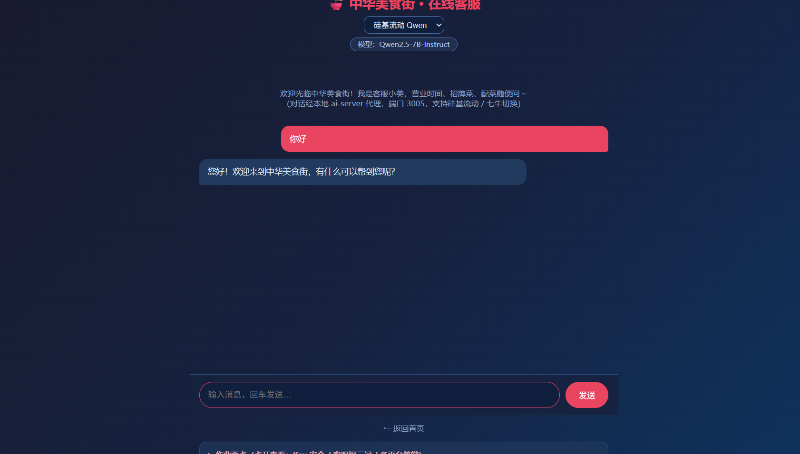
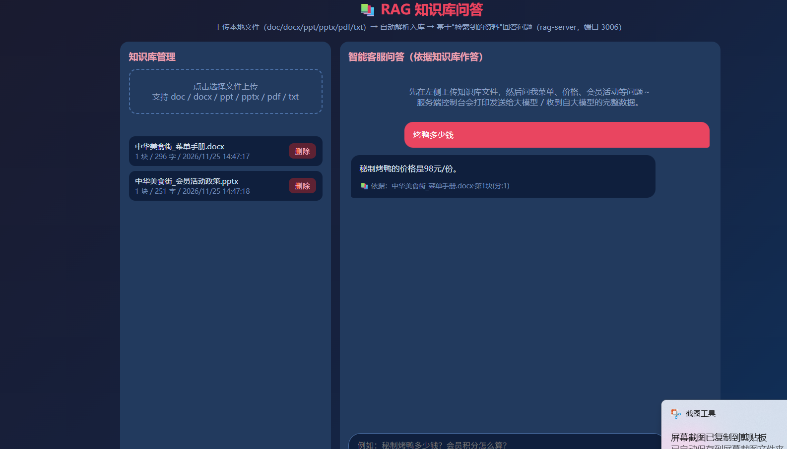
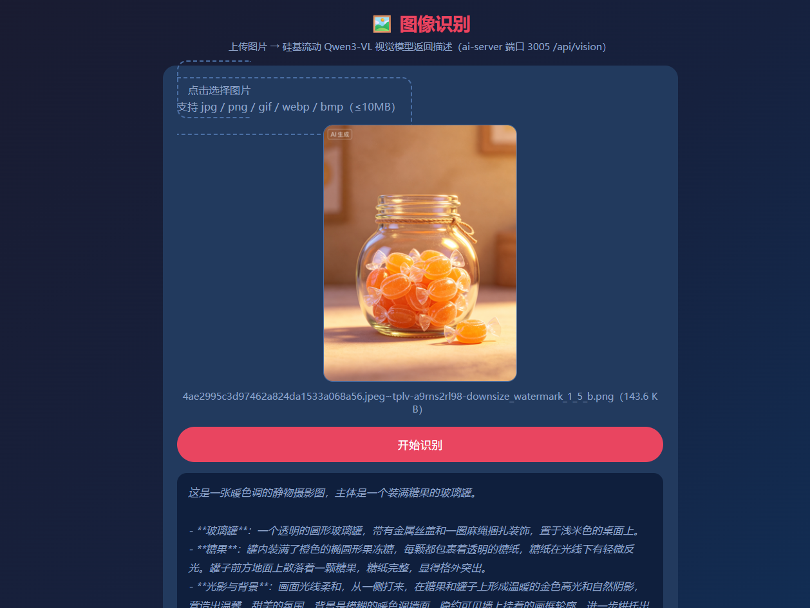
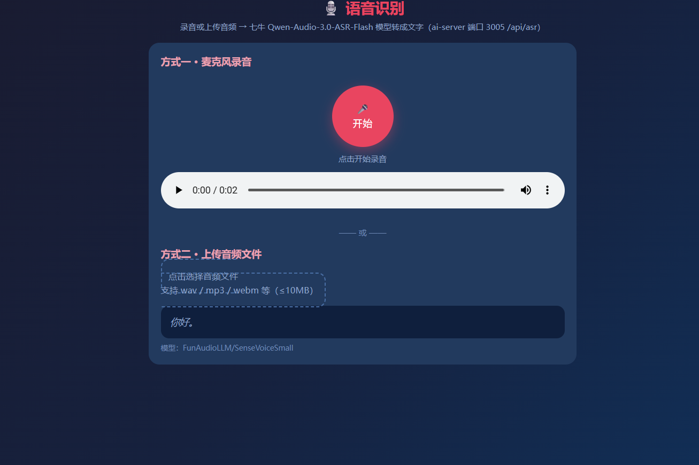

四大 AI 能力的真实运行截图：智能客服 · RAG 知识库问答 · 图像识别 · 语音识别（点击图片可放大）
ai-server（端口 3005）代理 Qwen2.5-7B-Instruct，客服人设 system 提示词管住回答范围；实测「你好」获得正常应答。

上传 docx/pptx 自动解析入库，检索到相关块后拼进提示词；实测「烤鸭多少钱」回答 98 元并标注知识来源（菜单手册.docx 第1块）。

上传图片转 base64 交给视觉模型；实测糖果罐照片返回结构化描述：玻璃罐细节、糖果形态、光影背景全部准确。

麦克风录音自动送 /api/asr 转文字；实测录音「你好」识别准确，主通道七牛失败时自动降级硅基流动 SenseVoiceSmall。
